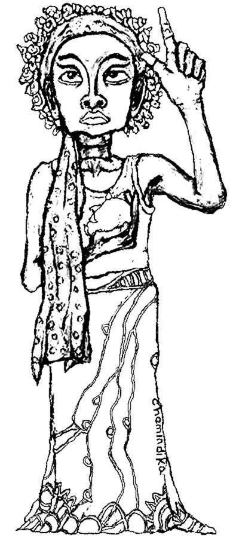

Articles · May 2002
Diaspora Flow
Diaspora Flow is a Minnesota-based Sri Lankan American nonprofit arts organization connecting communities of color through artistic expression. We are also dedicated to supporting young artists of color in pursuing their vision as artists and activists. Our goal is to use the arts as a means for social change and to build solidarity among people of color through various mediums such as spoken word, visual and performance art, theater, and music.
Diaspora Flow came out of conversations between two artists/activist friends, Pradeepa Jeevamanoharan and Chamindika Wanduragala, about the lack of representation of the Sri Lankan American community. This brought us to the realization that much work needs to be done in building a foundation for powerful representation and action. As we conceptualized various projects for the under represented Sri Lankan diaspora, we felt the need to connect with other communities of color to work in solidarity on issues that effect us all. We both felt the urgency of needing to do something immediately.
Our first project, Fluid Movements, came about as a way to do community building in a powerful, yet celebratory way. Between the founding of Diaspora Flow in February, 2001, and our first show in April, we applied for nonprofit status, spoke with other organizations and people to get them interested in the project, and struggled to find funding. We brought together over 20 artists of color for an evening of spoken word, music, and dance. The performers included emerging and established artists/activists of color, with diversity in terms of age, race, sexuality, and class. Bringing together local and national artists allowed them to network and foster future collaboration on performances and social change work. Our goal was to create a multi-media event that transgressed boundaries and perceptions within communities of color. Local grassroots activist organizations made public service announcements between performances, encouraging the audience to participate in various actions going on in the community.
We at Diaspora Flow recognize that constructs of race and gender
are fluid. The concept for the Fluid Movements project envisions
an evolving dialogue between artistic voices to expand ways of
thinking and percieving experiences as well as moving people towards
action on the very issues facing their communities.
Our first event within the R'Lankanz project also got off the
ground this year. R'Lankanz is a program designed to bring visibility
and voice to the marginalized Sri Lankan American community. This
program's projects will initiate dialogue about the Sri Lankan
diaspora by conducting workshops, forums, lectures, films, exhibits,
and performances.
R'Lankanz, the first ever multi-media arts event exploring the Sri Lankan American experience, took place in August, 2001, in New York City. The civil war in Sri Lanka has divided its people along ethnic lines, with the same divisions being manifested here in the U.S., continuing down to the second generation. This was a much needed collaboration between Tamil and Sinhala Sri Lankan artists committed to building solidarity along political and aesthetic lines. This groundbreaking initiative featured the artwork of Chamindika Wanduragala, Pradeepa Jeevamanoharan's choreography combining classical South Asian dance styles with contemporary movement, and the performance poetry of Marian Yalini Thambynayagam and D'Lo, whose lyrical flow connected arts and activism.
Our third major program now underway in Minnesota is called Art in Resistance. This is a series of arts/social change workshops for high school aged youth interested in pursuing their own vision of arts and activism. The focus is to compare struggles faced by communities of color and how the arts can be used as a form of resistance to social injustices. All the work done by youth count as credit to fulfill graduation requirements. The workshops will also include guest artists and fieldtrips to attend arts events. This project continues throughout the school year every year, and will be expanded. Diaspora Flow believes in long-term sustained development of projects to truly impact the youth. The first visiting artists at the learning circle were here through one of our shows at Penumbra.
Another important project for us has been curating part of the Late Night Performance Series managed by Laurie Carlos at one of the few African American theaters left in the nation: Penumbra Theatre Company. The racism within the mainstream South Asian community against African Americans gives a partnership like this a heightened significance.
Through our programming and partnerships, we hope to show the strength in connecting with all people of color in the struggle to create social change.

_____________________________________________________________
To contact Diaspora Flow: diasporaflow@yahoo.com, www.diasporaflow.org
Chamindika Wanduragala & Pradeepa Jeevamanoharan from Minnesota, USA, are pioneering the above Sri Lankan American arts initiatives. A version of this article appeared in the Fall/Winter 2001, Number 14 of SAMAR.